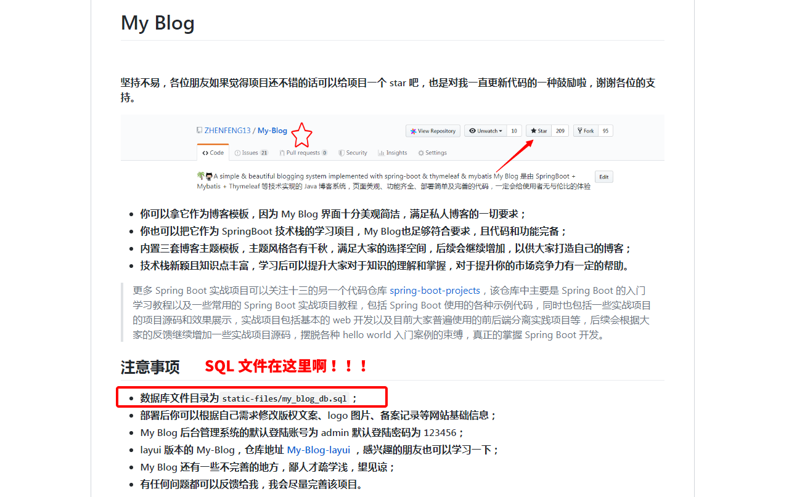

原文连接:https://www.cnblogs.com/han-1034683568/p/12043767.html
这是发生在我 QQ 群里的一件事情，当时直接把我气的吐血，也过去了挺久的，但是觉得挺有意思的，现在整理一下这个事情，逗大家一乐儿。由于最近比较忙，也没想好新的题材来写博客，就拿这件事来顶一顶，主要是觉得这也是我日常生活中经历的小折磨，伤口扒开让大家看一看刀疤可不可爱，把我不开心的事情说出来让大家开心一下，接下来我们谈一谈次的崩溃事件。
PS：本次事件中的主角我已经沟通过，可以用该事件来整理这篇文章，感谢。另外，所有关于聊天记录中的个人账户信息都已经做了遮挡操作。
我的 2019 年记录：
「合抱之木，生于毫末，百丈之台，起于垒土」记录我的 2019
在线问答
好，来。
这是一个非常平静的周一，打完卡-->吃完早饭-->开完早会，准备看看邮件又有什么东西要做。忽然，QQ 群里热闹起来了，这就是我的日常，几个 QQ 群总会时不时的忽然就躁动了起来，躁动的像你妈打你毫无道理。此时，我还没有意识到事情的严重性，接下来的半个小时我应该都会后悔点开这只跳动的小企鹅。
9:56:44
记住这个时间，9:56:44，一切的一切由此开始，一位 QQ 群友在群里发问，无法登陆 My-Blog 的后台让我们帮忙看一下。 My-Blog 是我的另外一个在 GitHub 上发布的开源博客项目，我还没有介绍给大家，后续我会整理一些文章来详细地介绍一下这个 Spring Boot 开源博客项目。
9:58:42
有其他群友发了一句加盐了，紧接着发问的群友又问了一句什么意思。
10:23:02
好的，过了差不多半小时，本次崩溃事件的主角闪亮登场了！让我们掌声欢迎受害者入场！
可能是当时开会比较久，亦或者是在带薪蹲坑，所以一直到半小时后才看到群里的消息，然后受害者回了一句“可能又是没连上数据库”，同时配上一个无语的表情。
事件背景
好的，通过以上三个时间点以及施暴者和受害者之间的对话，我来还原一下整个事件的背景：
一位群友使用了我的开源博客项目代码，在本地启动并很顺畅的运行了，但是在登录博客后台管理系统时，没有登录成功，他不知道是什么原因，也可能捣鼓了很久但是没有结果，因此他选择来到受害者的 QQ 群里施暴，噢不对，是发问。
紧接着一位群友说是加盐了，这里我插一句，并不是加盐了， My-Blog 这个开源博客的登录方式很简单，用户的登录流程也不复杂，表结构设计也就是用户名、密码这种字段，密码是用到了 MD5 方式存储的，并没有加盐。
紧接着受害者回答到可能是没连上数据库，我们看此时的受害者还是一脸轻松，他竟然还能发得出宝情标，说明此时受害者情绪也比较稳定。
至于为什么说没连上数据库呢？因为这个项目自从开源到现在，我遇到最多的问题就是为什么连不上数据库，至于没连上数据库的原因也很简单，十个遇到这个问题的朋友有九个是数据库账户或者密码写错了。其他问题应该不多，因为这个开源项目很齐全，所有的代码都是开源的，Java 代码全部开源，页面文件全部开源，数据库文件全部开源，默认的后台登录账号密码我也已经写到文档里了。
因此使用这个项目的朋友一般不会遇到这个问题，最多的问题就是连不上数据库，这也是为什么我会那么回答。
OK，背景介绍完毕，请大家记住受害者此时的平静，弹幕刷起来，“合影留念”。
在线确认
10:44:58
紧接着，这位群友回答，已经连上数据库了，只是登录不进去。
10:49:09
由于众人并没有在群里说话，这位群友又再次确认，并问道“账号密码不就是 user 表里的吗”。（PS：还好他问了这么一句，不然真找不到什么问题）
10:50:12
通过监控记录，我们再次发现了受害者的身影。
因为他刚刚问了那么一句话，所以我已经确定应该不是程序问题，之前我还有点怀疑是不是开源代码有问题，现在可以确认应该是这位群友的操作问题。虽然如此，但是我也发现了一个令我吃惊的事情，就是这哥们儿貌似在做一件我无法理解、也万万没有想到的事情，他输账号密码的时候输入了加密后的字符串。
因此，受害者开始进行确认：“你账号输了 admin 密码输了 md5 后的字符串？”。此时，我多么希望他不是这么做的，不然我真的无法接受。
10:51:12
通过监控记录，我们发现嫌疑人也出现在画面中，而且，手中的凶器上已经沾上了血迹。
这位群友发的截图，真的像是一刀扎在了我坚实的胸膛上（就当是坚实的吧，大家别戳穿我，嘻嘻），我当时真的开始有点儿难受了。
10:51:22
不看监控了。
受害者当时并不死心，又再次进行确认。
我不敢相信我的眼睛，因此我再三确认，前文中我也提到过，这个开源博客项目的文档是很全的，所有文件开源，而且一些注意事项我也写在仓库文档里了，其实确认的时候已经是崩溃的前兆了。
10:51:56
“对，密码直接复制进去的”
弹幕刷起来，“合影留念”。
这句话当时就将我击倒了，我不敢相信我的眼睛，也有其他群友看不下去了，开始表示无奈。
在线崩溃
10:52:04
确认结果仅仅几秒钟之后，受害者崩溃了，QQ 群主在线崩溃。
OK，还开始口吐芬芳。
跟大家说一下，10:51:57 到 10:52:04 这短短的几秒钟，大家不知道我有多痛苦，我平时在群里一直是一个很开朗的形象，但是真的被这件事情打击的没了心智。
那几秒钟，我甚至开始怀疑世界，我做错了什么？我到底要怎样活？
10:52:04 到 10:52:30 继续自闭。
10:52:50
终于整理好了情绪，但是我已经崩溃了。
我向群里的老哥们发问：“你们真的要这么搞我吗？”
我当时太痛苦了，我真的已经开始怀疑世界了，为什么要这么针对我啊？明明已经告诉你账号密码了，你怎么还能输错啊？是不是要我到你家里给你开电脑、给你启动项目才行啊？我到底要怎样做你们才能满意啊？
开始整活儿
看到这里我气得浑身发抖，大热天的全身冷汗，手脚冰凉，地狱空荡荡魔鬼在人间，这个 QQ 群还能不能好了？群主到底要怎么活着你们才满意 ？眼泪不争气的流了下来 ，这个 QQ 群到处充斥着对群主的压迫，群主何时才能真正的站起来！
浑身发抖，浑身发抖，爷当时只记得浑身发抖。

你们发现了吗？还有群友看热闹不嫌事儿大，我太难了，发抖警告！
在线诉苦
其实我也不记得当时的想法了，但是我感觉得到我当时心里特别特别堵，因为真的很少在群里暴躁，要么就是当天早上发生了其他的事情，茶叶蛋壳没剥好，或者是豆浆太烫不舒服，总之那天就忽然崩溃掉了，这也是我建群以来第一次崩溃，之后开始诉苦。
10:53:22
其实我当时已经崩溃了，也有点疯了，10:53:22 开始碎碎念模式。
10:53:43
继续诉苦，碰到一些很无奈的问题，就得调整心态。
10:54:04
这群主疯了！他还在碎碎念！
所有的代码都是开源的，Java 代码全部开源，页面文件全部开源，数据库文件全部开源，我都做到这份儿上了，我真的不知道为毛还要被折磨啊？
10:54:19
崩溃的群主，他还在诉苦！
对，还有说找不到 SQL 文件的！！！我都写在文档里了好吗！！！都已经标上去了！！！

10:56:52
继续诉苦。
建群之后遇到的问题也很多了，连不上数据库、页面报错、Maven 依赖报错、代码看不懂、下载不到 Jar 包、不会用 IDEA.....
一系列的问题，我都感觉挺正常的，可能是刚开始学 Spring Boot，或者刚开始着手做一些 Java Web 项目，有一些问题是非常正常的。但是今天这种事情真的离谱，我也是第一次碰到这种问题，而且我万万想不到的就是，这位朋友真的把 MD5 后的字符串输入了密码框！这也是我建群之后，或者说开源了这个博客项目之后，第一次碰到有人这么搞我，真的崩溃了。
10:57:06
帅气的脸庞忽然红了。
可能是意识到场面有些失控，群主开始调整心态，毕竟崩溃是不能解决问题的。
10:57:34
真的好累啊。
就算了吧，不要把大家弄得尴尬。
还是算了吧，也不是有意错填密码。
那就算了吧，各回各家。
放下吧
“没事儿，都是一步步过来的，我好了。”
还是告诉大家，群主已经没事了，这件事就让它过去吧。
我不是真的快乐，我的微笑只是我涂上的保护色。
总结
别再逼我了，我就要发抖了，手脚冰凉警告！
给大家整理了一下受害者崩溃的时间线，希望大家能够心疼一下这位卑微的群主，哪怕一秒也行。当然，这位被折磨到崩溃的受害者就是我本人，这件事情我一直都印象深刻，每次看到群里有人问关于 My-Blog 这个开源博客项目的问题时，我都会想起这段回忆，也会记起那天被群友支配的恐惧，唉。
我是十三，今后我依然会分享一些经历过的好玩的事情。
除注明转载/出处外，皆为作者原创，欢迎转载，但未经作者同意必须保留此段声明，且在文章页面明显位置给出原文链接，否则保留追究法律责任的权利。
感谢大家的观看，我是十三，文章首发于我的公众号“程序员的小故事”。